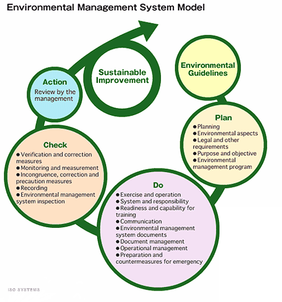
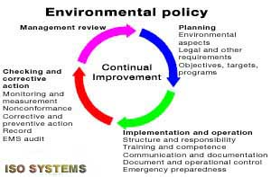

ISO 14001:2015 Environmental Management System (EMS)
ISO 14001 is the international Environmental Management System (EMS) standard. ISO 14001:2015 was issued November 15, 2015. Changes to the new standard clarify and simplify the requirements, and align the standard with ISO 9001:2015.

Is ISO 14001 compliance a "requirement"?
Many World Class companies are ISO 14001 certified, and "require" their partners/suppliers to also become ISO 14001 certified. Ford Motor Company requires their suppliers to be ISO 14001 certified.
Does it help if your quality management system (QMS) is already certified?
Your certified/accredited quality management system (QMS) (e. g., ISO 14001, ISO 17025) may be revised to also meet ISO 14001 EMS requirements! The QMS and EMS have many requirements common to both QMS and EMS including document and records control, management responsibility and review, corrective and preventive action, internal auditing, and calibration and control of measuring/monitoring devices. We think this is a smart idea!
What about "environmental aspects?"
The key to continual improvement in meeting ISO 14001 requirements is effective identification and ranking of all "Environmental Aspects". These aspects are then evaluated for significance. The environmental impact of "Significant Aspects" can best be reduced by targeted, effective action. ISO SYSTEMS have the experience and knowledge to effectively audit your facility, to identify and rank Environmental Aspects, and to reduce your firm's environmental impact.
What are some of the advantages of implementing an effective EMS compliant with ISO 14001?
- Improve your competitive advantage
- Minimize the risk of an environmental incident
- Reduce the cost of waste management and disposal, save in consumption of energy and materials, lower production costs or packaging costs
- Improve your corporate image among customers, regulatory agencies, and the public
- The law may require compliance! Environmental inspectors from Federal, state, and local agencies may visit your facility at any time, often without notice
- Provide a framework for continual improvement of your environmental performance

What we offer
ISO SYSTEMS ISO 14001 EMS Implementation Support is loaded with advantages for your organization. We offer choices... you decide just how much support you need. Everything we provide meets one or more ISO 14001 requirements, including
- an environmental manual unique to your organization, acknowledging all ISO 14001 requirements
- documentation and implementation support for your value
- added environmental management system
- development of a simple, effective document and record control system
- development of a simple, effective document and record control system
- a mentored, full system audit of the new environmental management system (no registrar "preliminary assessment" required)
- corrective/preventive action support from the full system audit
- recommendation for an economical, effective registrar, if you choose
- our witness of your registration audit, if you choose
We take the time necessary to custom fit all applicable ISO 14001 requirements to your organization. No "consultant" is as willing and able as
ISO SYSTEMS to take the time to build a EMS to both reduce your costs and "pass the audit," guaranteed!
At
ISO SYSTEMS we always offer No-Nonsense Pricing, all expenses included. "Consultants" normally charge more than we do, and provide less than we do.
ISO SYSTEMS is a smaller business. dollar-for-dollar, we provide more support! We welcome comparison!
Your organization is very busy... everyone wears more than one hat. Time to implement a environmental management system is often limited. We take less time to get you certified. Environmental system implementation is a "team sport..." however, if your organization does not have the time, we can deliver a turn-key system, guaranteed to get you certified.
Our methods
never include one-size-fits-all, "cookie-cutter" approaches. ISO 14001 environmental systems requires process approaches, customer focus, and continual improvement. You cannot get that from a cookie cutter. Most importantly, our environmental management systems improve your bottom line. "Cookie cutter" approaches do not work, and only add cost.
When we leave, the Environmental Management System is yours, not ours. We provide all the knowledge and experience your organization needs to effectively manage and improve your certified EMS in the future. When we are finished, your organization owns your ISO 14001 environmental management system.